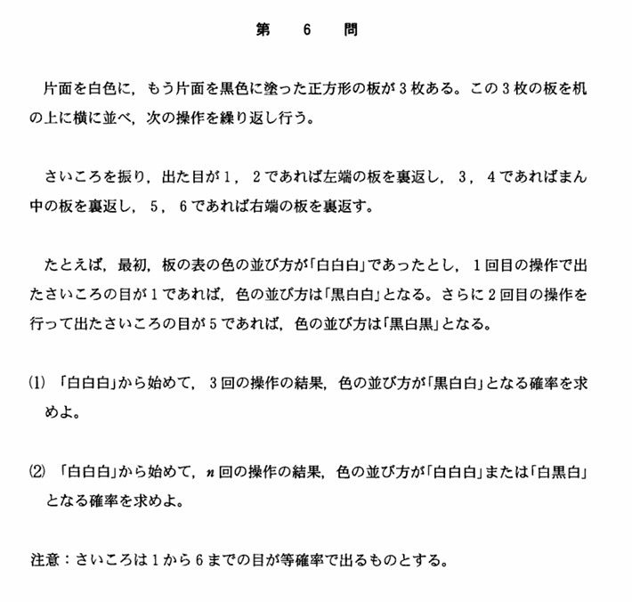

2004年 第6問
確率漸化式

分析
(2)で確率漸化式をどう立てるかで思考力を問う問題である。また、実験して一般的な性質を見つける能力も必要である。偶数回の操作後、白が1個または3個であり、奇数回の操作後は白が0個または2個であることを基に、漸化式を簡略化できる。
また、対称性があることから、与えられた条件を、より簡単な形で漸化式を立てることができないかという思考を必要としている。偶奇の場合分けを考えなかったり、白の個数で確率をおくことを考えなかったりすると、漸化式が複雑になり、煩雑な計算を強いられる。
誘導
(1)は、このゲームの性質である、同じ場所を2回ひっくり返せば色が変わらないということに気づかせる問題であろう。
(1)の「黒白白」と(2)の「白黒白」というものは対称性より本質的には同じであるため、誘導としては自然なものである。むしろ、「黒白白」を実験させたことが誘導であるということから、対称性を使って欲しいというメッセージを読み取ることもできる。